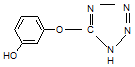
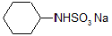
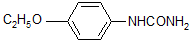
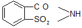

식품기사 (2008-07-27 기출문제)
1과목: 식품위생학
1. 산화방지제에 대한 설명으로 틀린 것은?
- 천연 산화방지제로는 향신료 추출물, 참깨 추출물 등이 있다.
- 디부틸히드록시톨루엔은 식용유지, 어패냉동품 등에 사용된다.
- 에리쏘르빈산은 아스코르빈산의 이성체로, 미생물에 의해 만들어진다.
- 몰식자산프로필은 간장과 음료수에 사용된다.
(정답률: 60%)

2. 식중독 세균 중 열에 대한 저항력이 가장 강한 것은?
- Salmonella typhi
- Staphylococcus aureus
- Clostridium botulinum
- Salmonella enteridis
(정답률: 76%)
3. 단백질 식품의 부패생성물과 거리가 먼 것은?
- 암모니아
- 알코올
- 황화수소
- 아민류
(정답률: 74%)
4. 식품의 방사선 조사에 대한 설명 중 틀린 것은?
- 60Co 등의 감마선이 이용된다.
- 식품의 발아 억제, 숙도 조절을 목적으로 사용된다.
- 일단 조사한 식품에 문제가 있으면 다시 조사하여 사용한다.
- 완제품의 경우 조사처리된 식품임을 나타내는 문구 및 조사도안을 표시하여야 한다.
(정답률: 88%)
5. 채소류로부터 감염되는 기생충은?
- 폐흡충
- 회충
- 무구조충
- 선모충
(정답률: 89%)
6. 합성수지 포장재에서 용출될 수 있는 내분비교란물질은?
- dioctyl phthalate
- polyvinyl alcohol
- silicon
- polyethyene
(정답률: 65%)
7. 미량으로 발암이나 만성중독을 유발시키는 화학물질 중 상수원 물의 오염이 문제가 되는 것은?
- 아질산염(N-nitrosamine)
- 메틸알코올(methyl alcohol)
- 트리할로메탄(trihalomethane, THM)
- 이환방향족아민류(heterocylic amines)
(정답률: 82%)
8. 식품공장에서 미생물수 감소 및 오염물질 제거 목적으로 사용하는 위생처리제의 특성으로 옳은 것은?
- 제4급암모늄 화합물 - Gram 음성균에 효과가 없음
- hypochlorite - 부식성이 없으며유기물질이 존재해도 활성에는 영향이 없음
- iodophors - 부식성이 강하며, 피부자극에 강함
- acid-anionics - ph가 높을수록 효과가 좋음
(정답률: 29%)
9. 식품등의 세부표시기준상 주류의 제조연월일 표시기준으로 옳은 것은?
- 제조“일”만을 표시할 수 있다
- 병마개에 표시하는 경우에는 제조 “연월”만을 표시할 수 있다
- 제조번호 또는 병입연월일을 표시한 경우에는 제조일자를 생략할 수 있다
- 제조일과 제조시간을 함께 표시하여야 한다.
(정답률: 57%)
10. 공장폐수에 의한 식품오염에 대한 설명으로 옳은 것은?
- 도금공장의 폐수는 주로 유기성 폐수로서 유해물질이 농ㆍ수산물 등에 직접적인 피해를 줄 수 있다.
- 식품공장의 폐수는 주로 무기성 폐수로서 BOD가 높고 부유물질을 다량 함유하며, 용수를 오염시켜 2차적인 피해를 주는 경우가 있다.
- BOD란 물 속에 있는 오염물질이 생물학적으로 산화되어 유기성 산화물과 가스가 되기 위해 소비되는 산소량을 ppm으로 표시한 것이다.
- 미나마타병은 공장폐수 중 메틸수은 화합물에 오염된 어패류를 장기간 섭취하여 발생한 것이다.
(정답률: 82%)
11. 저온유통이 식품의 품질에 미치는 영향이 아닌 것은?
- 산화반응속도 저하
- 효소반응속도 저하
- 미생물 번식 억제
- 식중독균 사멸
(정답률: 89%)
12. 식품을 매개로 하여 전파될 수 있는 바이러스성 질환이 아닌 것은?
- A형 간염
- 파리티푸스
- 노로바이러스 식중독
- 소아마비
(정답률: 69%)
13. 타르색소에 대한 설명으로 틀린 것은?
- 석유의 타르 중에 함유된 벤젠이나 나프탈렌으로부터 합성한다.
- 식용색소 청색 제1호 및 적색 제3호는 빛에 불안정하다
- 식품에 사용이 허용된 것은 수용성 산성타르계색소이다.
- 독성이 강한 것들이 많다.
(정답률: 48%)
14. 포도상구균에 대한 설명으로 틀린 것은?
- 균이 10개 정도 함유된 식품을 섭취하면 식중독을 일으키게 된다.
- 균이 생산하는 독소는 열에 강하여 열처리한 식품을 섭취할 경우에도 식중독이 발생할 수 있다.
- 균은 80℃에서 30분 정도 가열하면 사멸된다.
- 자연계에 널리 분포되어 있는 세균이다.
(정답률: 49%)
15. 식품안전성 평가시험 중 최대무작용량을 판정하는데 사용되는 것은?
- 급성독성시험
- 만성독성시험
- 아급성독성시험
- 발암성시험
(정답률: 51%)
16. 곰팡이독소에 대한 설명으로 옳은 것은?
- 아플라톡신 B1은 Aspergillus flavus에 의해 생성되어 간암을 유발하는 강한 독성을 나타내며 우유나 유제품에서 발견된다.
- 곰팡이독소의 생성은 계절과 깊은 관계를 나타내며 항생물질로 치료효과가 없다.
- 오클라톡신은 Penicillium속의 곰팡이가 생성하는 독소로 황변미독소라고 한다.
- 파툴린은 사과나 배에 주로 발행하는 곰팡이 독소로서 가열공정에 의해 쉽게 파괴된다.
(정답률: 37%)
17. 경구전염병의 특성에 대한 설명으로 틀린 것은?
- 경구전염병은 병원성미생물이 음식물, 손, 기구 등에 의해 입을 통하여 체내 침입ㆍ증식하여 주로 소화기 계통에 질병을 일으켜 소화기계 전염병이라고도 한다.
- 경구전염병은 전염원, 전염경로, 감수성숙주가 있어야 하나, 일반 식중독은 종말 감염이다.
- 세균성이질은 여름철에 어린이들이 많이 걸리는 경구 전염병으로 병원체는 Salmonella typhi, Salmonella paratyphi이다.
- 대표적인 수인성 전염병으로는 콜레라가 있으며 병원체는 Vibrio cholerae이다.
(정답률: 75%)
18. 이타이이타이병의 원인 물질은?
- 비소
- 구리
- 납
- 카드뮴
(정답률: 88%)
19. 식품의 위생검사를 위한 시료채취 방법에 대한 설명으로 틀린 것은?
- 전체 모집단을 대표할 수 있는 균일한 시료를 채취하여야 한다.
- 미생물 검사용 시료는 멸균용기에 무균적으로 채취하고 미생물이 증식하지 않도록 냉동하여 신속히 검사실로 운반하여야 한다.
- 온도를 유지하기 위하여 얼음이나 드라이아이스를 사용할 수 있다.
- 수분항목을 측정할 때는 증발 또는 흡습에 의한 수분함량 변화를 방지하기 위하여 꼭 밀폐된 용기를 사용하여야 한다.
(정답률: 52%)
20. 식중독의 역학조사에 대한 설명으로 옳은 것은?
- 검병조사 전에 원인분석을 실시한다.
- 원인식품은 통계적인 방법으로 추정한다.
- 원인물질을 검사하기 위해서는 보존식만 검사한다.
- 검병조사를 통하여 원인물질의 추정이 가능하다.
(정답률: 46%)
2과목: 식품화학
21. 인공감미료로 이용되는 saccharin의 구조식은?




(정답률: 33%)
22. 외부의 힘에 의하여 변형된 물체가 그 힘을 제거하여도 원상태로 돌아오지 않는 성질은?
- 탄성(elasticity)
- 점탄성(viscoelasticity)
- 점성(viscosity0
- 소성(plasticity)
(정답률: 82%)
23. 다음 중 섬유상 단백질이 아닌 것은?
- 콜라겐
- 엘라스틴
- 케라틴
- 헤모글로빈
(정답률: 76%)
24. 우유에 대한 설명으로 옳은 것은?
- 살균방법 중 고온단시간살균법(HTST)은 130 ~ 135℃에서 0.5 ~ 5초간 살균하는 것이다.
- 우유에 산을 가하였을 때 침전물이 생기는 것은 유당(lactose)이 응고하기 때문이다.
- 유당 불내증(젖당소화장애증, lactose intolerance)은 락타아제(lactase)가 적게 분비되거나 생성되지 않아서 생긴다.
- 우유의 주된 탄수화물인 젖당은 일반적인 당류 중 감미도가 높고 물에 잘 용해되어 아이스크림 제조에 많이 이용된다.
(정답률: 77%)
25. 식품별로 함유하고 있는 주요 단백질의 연결이 옳은 것은?
- 쌀-오리제닌(oryzenin)
- 밀-글리시닌(glycinin)
- 보리-글로부린(globulin)
- 콩-제닌(zenin)
(정답률: 67%)
26. 혈액 중 칼슘과 결합하여 불용성염을 형성하는 시금치에 함유된 성분은?
- 초산
- 호박산
- 사과산
- 수산
(정답률: 57%)
27. 육류의 사후강직에 대한 설명 중 맞는 것은?
- pH가 저하된다.
- ATP가 증가한다.
- 보수성이 증가한다.
- 가열하면 연해진다.
(정답률: 74%)
28. 자당(sucrose)을 포도당과 과당으로 가수분해하는 효소는?
- kinase
- aldolase
- enolase
- invertase
(정답률: 73%)
29. 과당(fructose)의 수용액에서 평형화합물 중 가장 많이 존재하는 것은?
- α-D-fructofuranose
- β-D-fructofuranose
- α-D-fructopyranose
- β-D-fructopyranose
(정답률: 51%)
30. 두유제품에서 콩비린내 냄새가 날 때 다음 중 어떤 성분이 냄새성분과 결합하여 냄새를 가장 최소화 할 수 있는가?
- 말토덱스트린
- 싸이클로덱스트린
- 라피노스
- 스타키오스
(정답률: 51%)
31. 무기염류의 작용과 관계가 먼 것은?
- 체액의 pH 조절
- 체액의 삼투압조절
- 항산화성 증대
- 효소작용의 촉진
(정답률: 59%)
32. 양파, 무 등의 매운맛 성분인 황화 allyl류를 가열할 때 단맛을 나타내는 성분은?
- allicine
- allyl disulfide
- alkylmercaptan
- sinigrin
(정답률: 61%)
33. β-amylase가 작용할 수 있는 전분 내의 결합은?
- α-1,4 glycoside 결합
- β-1,4 glycoside 결합
- α-1,6 glycoside 결합
- β-1,6 glycoside 결합
(정답률: 62%)
34. 우유와 같이 분산상과 분산매가 모두 액체인 콜로이드 상태를 무엇이라 하는가?
- 진용액
- 유화액
- 졸(sol)
- 겔(gel)
(정답률: 38%)
35. 단면적이 1m2인 A식품과 4m2인 B식품에 100N의 힘이 작용할 때 두 물체에 작용하는 응력(stress)의 관계는?
- A > B
- A < B
- A = B
- AB = 1
(정답률: 67%)
36. 철(Fe)에 대한 설명으로 틀린 것은?
- 철은 식품에 헴형(heme)과 비헴형(non-heme)으로 존재하며 헴형의 흡수율이 비헴형보다 2배 이상 높다.
- 비타민 C는 철 이온을 2가철로 유지시켜 주어 철이온의 흡수를 촉진한다.
- 두류의 피틴산은 철분 흡수를 촉진한다.
- 달걀에 함유된 황이 철분과 결합하여 검은색을 나타낸다.
(정답률: 65%)
37. 점탄성을 나타내는 식품과 거리가 먼 것은?
- 마가린
- 육류
- 펙틴 젤
- 가소성 고체 지방질
(정답률: 71%)
38. 냄새를 나태내는 화학성분에 대한 설명으로 틀린 것은?
- 에스테르(ester)류는 과일과 꽃의 향기성분이다.
- 포도당을 가열하면 퓨란(furan), 페놀(phenol) 등의 냄새성분이 생긴다.
- 육류나 어류의 선도가 저하되었을 때 발생하는 자극성 냄새의 원인성분은 암모니아(ammonia)이다.
- 신선한 우유에 다량 함유된 휘발성 carbonyl 화합물은 살균처리 과정에서 없어진다.
(정답률: 62%)
39. 일정한 전단속도일 때 시간이 경과함에 따라 외관상 점도가 증가하는 유체는?
- dilatant 유체
- pseudiplastic 유체
- thixotropic 유체
- rheopectic 유체
(정답률: 50%)
40. 사과가 숙성될 때 관찰되는 현상이 아닌 것은?
- 가용성펙틴 증가
- 유기산 증가
- 탄닌 증가
- 안토시아닌 형성
(정답률: 68%)
3과목: 식품가공학
41. 밀가루의 물리적 시험법에 관한 설명 중 틀린 것은?
- 아밀로그래프로 아밀라아제의 역가를 알 수 있다.
- 아밀로그래프로 최고점도와 호화개시 온도를 알 수 있다.
- 익스텐소그래프로 반죽의 신장도와 항력을 알 수 있다.
- 익스텐소그래프로 강력분과 중력분을 구할 수 있다.
(정답률: 64%)
42. 샐러드유 제조시 혼탁물질을 제거하기 위해 사용되는 정제공정은?
- winterization
- decoloring process
- deodorizing process
- degumming process
(정답률: 72%)
43. 개체식품에 냉각공기를 강하게 불어 넣어 냉동시키려는 물체를 떠 있는 상태로 냉동시키는 것은?
- 액체질소 냉동
- 유동층 냉동
- 침지 냉동
- 간접접촉 냉동
(정답률: 50%)
44. 유지 원료에서 유지를 추출할 때 사용하는 용제는?
- hexane
- methyl alcohol
- toluene
- sulphuric acid
(정답률: 75%)
45. 수지 때문에 육가공용 훈연재료로 적합하지 않은 것은?
- 떡갈나무
- 참나무
- 소나무
- 오리나무
(정답률: 63%)
46. 고형분 함량이 45%인 농축오렌지 주스의 건량기준 수분함량은 약 얼마인가?
- 55%
- 72%
- 102%
- 122%
(정답률: 35%)
47. 수확한 과일 및 채소에 대한 설명으로 틀린 것은?
- 산소를 섭취하여 효소적으로 산화되므로 이산화탄소를 내보내는 호흡작용을 하여 성분이 변화한다.
- 증산작용이 일어나 신선도와 무게가 변한다.
- 호흡작용은 수확 직후에 가장 저조하고 시간이 경과함에 따라 점차 강해진다.
- 고온성 과일 및 채소를 제외하고, 미생물이 번식하기 어려운 1 ~ 6℃ 정도가 저장을 위한 적당한 온도이다
(정답률: 84%)
48. 통조림 검사에서 flat sour의 특징이 아닌 것은?
- 가스의 생성 없이 산을 생성한다.
- 주로 살균부족에 의하여 발생하나, 밀봉불량에 의해서 발생할 수도 있다.
- 관(罐)을 개관해야 변패관을 알 수 있다.
- 타검에 의해 식별이 쉽다.
(정답률: 71%)
49. 무당연유의 제조공정에 대한 설명으로 틀린 것은?
- 당을 넣지 않는다.
- 예열공정을 하지 않는다.
- 균질화를 한다.
- 가열멸균을 한다.
(정답률: 75%)
50. 도살 후 일반적으로 최대경직시간이 가장 짧은 것은?
- 닭고기
- 쇠고기
- 양고기
- 돼지고기
(정답률: 79%)
51. 빵을 제조할 때 반죽의 숙성이 지나칠 경우 나타나는 현상이 아닌 것은?
- 흡수량이 증가하여 글루텐 형성이 느리다.
- 반죽이 처지는 현상이 나타난다.
- 반죽시간이 길어진다.
- 발효속도가 빨라져 부피형성에 좋지 않은 영향을 준다.
(정답률: 47%)
52. 달걀의 성분에 대한 설명으로 맞는 것은?
- 달걀의 난황단백질은 지방, 인 등과 결합된 구조로 되어있다.
- 다른 동물성 식품과는 달리 탄수화물의 함량이 높다.
- 달걀의 무기질은 알 껍질 보다는 난황에 많이 함유되어 있다.
- 달걀은 비타민 A, B1, B2, C, D, E를 함유하고 있으며, 대부분 난백에 함유되어 있다.
(정답률: 59%)
53. 물에 불린 콩을 마쇄하여 두부를 만들 때 마쇄가 두부에 미치는 영향에 대한 설명으로 틀린 것은?
- 콩의 마쇄가 불충분하면 비지가 많이 나오므로 두부의 수율이 감소하게 된다.
- 콩의 마쇄가 불충분하면 콩단백질인 glycinin이 비지와 함께 제거되므로 두유의 양이 적어 두분의 양도 적다.
- 콩을 지나치게 마쇄하면 불용성의 고운가루가 두유에 섞이게 되어 응고를 방해하여 두부의 품질이 좋지 않게 된다.
- 콩을 지나치게 마쇄하면 콩 껍질, 섬유소 등이 제거되어 영양가 및 소화흡수율이 증가한다.
(정답률: 73%)
54. 식품포장재의 일반적인 구비조건이 아닌 것은?
- 위생성
- 안전성
- 간편성
- 가연성
(정답률: 73%)
55. 포테이토칩의 제조과정에 대한 설명 중 틀린 것은?
- 식용유를 가열하여 170 ~ 190℃에서 튀겨낸다.
- 기름의 온도가 낮으면 칩에 기름이 많이 배어 맛과 저장성이 나빠진다.
- 수분이 8% 정도가 될 때까지 튀기고, 마이크로파로 건조처리를 한다.
- 당에 의한 변색을 막기 위해서는 향류식 터널열풍 건조기로 마지막 건조처리를 한다.
(정답률: 46%)
56. 탄닌의 분자량과 떫은 맛에 대한 설명으로 틀린 것은?
- 저분자 탄닌은 중합도가 낮고 입안의 점막단백질과의 가교결합이 적어 떫은 맛이 없거나 미약하다.
- 고분자 탄닌은 입안의 점막단백질 분자사이와의 가교결합이 약해 떫은 맛을 느낄 수 없다.
- 분자량이 크면 탄닌이 산화되어 물에 녹기 쉬어 떫은 맛이 강해진다.
- 분자량이 중간 정도이면 탄닌은 입안의 점막단백질과의 가교결합이 잘 되어 떫은 맛이 강하다.
(정답률: 41%)
57. 다음 중 EPA(eicosapentaenoic acid)와 DHA(docosahexenoic acid)가 가장 많이 함유되어 있는 식품은?
- 닭가슴살
- 삼겹살
- 정어리
- 쇠고기
(정답률: 84%)
58. 식품저장을 위한 염장의 삼투작용에 관한 설명으로 틀린 것은?
- 삼투작용으로 미생물 생육 억제 효과가 생긴다.
- 식품 내외의 삼투압차에 의하여 침투와 확산의 두 작용이 일어난다.
- 소금에 의해 식품의 보수성이 좋아진다.
- 소금에 의한 높은 삼투압으로 미생물 세포는 원형질 분리가 일어난다.
(정답률: 48%)
59. 식품의 유통기한 설정시 품질저하가 0차 반응속도일 때와 관련된 설명으로 틀린 것은?
- 품질저하속도는 물질농도에 비례하여 변한다.
- 일정시간 경과 후 남아있는 품질지표 물질은 그 시간과 직선적인(linear) 역비례 관계에 있다.
- 신선 과일 및 채소의 효소적 분해반응이 해당된다.
- 건조곡물의 비효소적 갈변반응이 해당된다.
(정답률: 31%)
60. 플라스틱 포장재료의 물성 특징에 대한 설명으로 틀린 것은?
- 폴리에틸렌필름(polyethylene, PE)은 기체투과도가 낮아 산화방지 용도로 사용된다.
- 폴리에스테르필름(polyester, PET)은 내열성이 강하여 레토르트용으로 사용된다.
- 폴리프로필렌필름(polypropylene, PP)은 인쇄적성이 좋기 때문에 표면층 필름으로 사용된다.
- 폴리스티렌필름(polystyrene, PS)은 내수성, 내산성, 내알카리성이 우수하여 유산균음료 포장에 사용된다.
(정답률: 44%)
4과목: 식품미생물학
61. 곰팡이 균총(colony)의 색깔은 주로 무엇에 의해 정해지는가?
- 포자
- 기중균사(영양균사)
- 기균사
- 격막(격벽)
(정답률: 67%)
62. 포자낭병이 포복지의 중간 부분에서 분지되는 것은?
- Mucor rouxii
- Rhizopus delemar
- Absidia lichtheimi
- Phycomyces nitens
(정답률: 19%)
63. Penicillium 속이 Aspergillus 속과 형태상 다른 점은?
- 기저경자(metulae)가 있다.
- 정낭(vesicle)이 없다
- 분생포자(canidia)가 없다.
- 분생자병에 병족세포가 있다
(정답률: 43%)
64. 산막효모의 특징이 아닌 것은?
- 산소를 요구한다.
- 산화력이 약하다
- 액의 표면에서 발육한다.
- 피막을 형성한다.
(정답률: 68%)
65. 세균의 증식에서 유도기(lag phase)가 생기는 이유는?
- 새로운 환경에 적응하기 위하여
- dipicolinic acid를 합성하기 위하여
- 편모를 형성하기 위하여
- 캡슐(capsule)을 형성하기 위하여
(정답률: 75%)
66. Saccharomyces cerevisiae를 12시간 배양한 결과, 균수가 2에서 128로 증가할 때 세대수와 평균 세대시간은?
- 세대수 = 64, 평균 세대시간 = 20분
- 세대수 = 7, 평균 세대시간 = 2시간
- 세대수 = 6, 평균 세대시간 = 2시간
- 세대수 = 5, 평균 세대시간 = 3시간
(정답률: 66%)
67. EMP 경로에 대한 설명으로 틀린 것은?
- 수소전달체는 NAD이다.
- 혐기성 반응의 경로이다.
- 포도당이 6-phosphogluconic acid를 거치는 경로이다.
- ATP 생성양이 TCA cycle에서 보다 적다
(정답률: 42%)
68. 효모에 의하여 이용되는 유기 질소원으로만 짝지어진 것은?
- 요소, 펩톤, 아미노산
- 아마이드, 황산암모늄, 염화암모늄
- 질산염, 인산암모늄, 요소
- 효모즙, 질산염, 황산암모늄
(정답률: 50%)
69. 세포내의 막계가 분화ㆍ발달되어 있지 않고 소기관이 존재하지 않는 미생물은?
- Saccharomyces 속
- Escherichia 속
- Candida 속
- Aspergillus 속
(정답률: 38%)
70. 파아지(phage)의 피해와 관계가 없는 발효는?
- ethanol 발효
- cheese 발효
- glutamic acid 발효
- acetone-butanol 발효
(정답률: 28%)
71. 아미노산으로부터 아민(amine)을 생성하는데 관여하는 효소는?
- amino acid decarboxylase
- amino acid oxidase
- aminotransferase
- aldolase
(정답률: 63%)
72. 김치를 저장할 때 나타나는 연부현상의 원인 효소는?
- polygalactouronase
- zymase
- ascorbinase
- glucose oxidase
(정답률: 36%)
73. photoautotrophs 가 탄소원으로 이용하는 것은?
- C2H5OH
- Ｃ6H12O6
- CO2
- CH4
(정답률: 72%)
74. 자일로오스 동화력이 있어 사료 효모로 사용되며 탄화수소 자화성이 강한 균주는?
- Candida tropicalis
- Saccharomyces sake
- Hansenula anomala
- Shizosaccharomyces pombe
(정답률: 58%)
75. 미생물의 변이를 유도하기 위한 돌연변이원으로 이용되지 않는 것은?
- acriflavine
- 페니실린
- 자외선
- 5-bromouracil
(정답률: 50%)
76. 다음 중 유포자 효모가 아닌 것은?
- Schizosacchromyces 속
- Kluyveromyces 속
- Hansenula 속
- Rhodotorula 속
(정답률: 44%)
77. 공여세포로부터 유리된 DNA가 직접 수용세포 내로 들어가 일어나는 DNA 재조합 방법은?
- 형질전환(transformation)
- 형질도입(transduction)
- 접합(conjugation)
- 세포융합(cell fusion)
(정답률: 36%)
78. 홍조류에 대한 설명 중 틀린 것은?
- 클로로필 이외에 피코빌린이라는 색소를 갖고 있다.
- 열대 및 아열대 지방의 해안에 주로 서식하며 한천을 추출하는 원료로 된다.
- 세포벽은 주로 셀룰로오스와 펙틴으로 구성되어 있으며 길이가 다른 2개의 편모를 갖고 있다.
- 엽록체를 갖고 있어 광합성을 하는 독립영양생물이다.
(정답률: 55%)
79. 계란의 미생물 변패에 관한 설명 중 틀린 것은?
- 계란 껍데기 표면에는 mucin 이라는 점질물질의 박피가 있어 미생물 침입이 일차적으로 차단된다.
- 계란의 난백에는 conalbumin이 들어있어 그람음성균의 생육을 저지한다.
- 계란의 난황에는 lysozyme, avidin, conalbumin 등 세균의 생육을 저지하는 물질을 함유하고 있다.
- 난백이나 난황의 녹색부패는 Pseudomonas fluorescens에 의해 야기된다.
(정답률: 37%)
80. 그람음성균인 대장균의 세포표층 성분에 해당하지 않는 것은?
- 인지질
- 덱스트란
- 리포단백질
- 펩티드글리칸
(정답률: 52%)
5과목: 생화학 및 발효학
81. 아미노산은 등전점보다 낮은 pH에서 전하가 어떻게 변하는가?
- (+)로 대전된다.
- (-)로 대전된다.
- 절대 전화(net charge)가 0 이된다.
- 대전되지 않는다.
(정답률: 67%)
82. 비오틴의 결핍증은 잘 나타나지 않는데 그 이유로 적합한 것은?
- 지용성 비타민으로 인체 내에 저장되므로
- 일상 생활의 자외선에 의해 합성되므로
- 아비딘 등의 당단백질의 분해산물이므로
- 장내세균에 의해서 합성되므로
(정답률: 84%)
83. 광합성 중 암반응에서 CO2를 탄수화물로 환원시키는데 필요한 것은?
- NADP, ATP
- NADP, ADP
- NADPH, ATP
- NADP, NADPH
(정답률: 59%)
84. 다음 중 효소의 반응속도에 영향을 미치는 요소와 가장 거리가 먼 것은?
- 온도
- 수소이온농도
- 기질의 농도
- 반응액의 용량
(정답률: 76%)
85. 세포막의 특성에 대한 설명으로 틀린 것은?
- 물질을 선택적으로 투과시킨다.
- 호르몬의 수용체(receptor)가 있다.
- 표면에 항원이 되는 물질이 있다.
- 단백질을 합성한다.
(정답률: 82%)
86. 지방산의 β-산화 과정에서 탄소가 몇 분자씩 산화분해 되는가?
- 1
- 2
- 3
- 4
(정답률: 62%)
87. 다음 중 제조방법이 병행복발효주에 속하는 것은?
- 맥주
- 약주
- 사과주
- 위스키
(정답률: 71%)
88. 효모 균체 성분 중 가장 많이 들어 있는 비타민은?
- thiamine
- riboflavin
- nicotinic acid
- folic acid
(정답률: 43%)
89. 단백질 합성시 anti condon site를 갖고 있어 mRNA에 해당하는 아미노산을 운반해주는 것은?
- DNA
- rRNA
- operon
- tRNA
(정답률: 77%)
90. 알코올 10% 수용액을 가열한 뒤 냉각하여 51%의 알코올 수용액이 생성되었을 때 증발계수는?
- 5.1
- 6.1
- 7.1
- 8.1
(정답률: 76%)
91. 항체호르몬인 프로게스테론(progesterone)의 11α-위치의 수산화(hydroxylation)를 통해 hydroxyprogesterone으로 전환하는데 이용되는 미생물은?
- Rhizppus nigricans
- Arthrobacter simplex
- Pseudomonas fluorescens
- Streptomyces roseochromogenes
(정답률: 27%)
92. HMP 경로의 중요한 생리적 의미는?
- 알코올 대사를 촉진시킨다.
- 저혈당과 피로회복시에 도움을 준다.
- 조직내로의 혈당 침투를 촉진시킨다.
- 지방산과 스테로이드 합성에 이용되는 NADPH를 생성한다.
(정답률: 70%)
93. 미생물에 의한 원유의 탈황법이 아닌 것은?
- 산화법
- 산화환원법
- 환원법
- 휘발법
(정답률: 79%)
94. 고정화 효모에 의한 알코올 발효의 설명으로 틀린 것은?
- 발효액의 알코올 농도가 회분발효의 경우보다 높다.
- 회분발효에 비해 발효시간을 단축할 수 있다.
- 유속이 빠르기 때문에 잡균오염의 위험성이 적다.
- 연속발효의 문제점인 wash out이 없다.
(정답률: 28%)
95. 핵산의 소화에 관한 설명으로 틀린 것은?
- 췌액 중의 nuclease에 의해 분해되어 mononucleotide가 생성된다.
- 위액 중의 DNAase에 의해 인산과 nucleoside로 분해된다.
- nucleosidase는 글리코시드 결합을 가수분해한다.
- pentose는 다시 인산과 결합하여 pentose phosphate로 전환된다.
(정답률: 46%)
96. 단세포단백질 생산의 기질과 미생물이 잘못 연결된 것은?
- 에탄올 - 효모
- 메탄 - 곰팡이
- 메탄올 - 세균
- 이산화탄소 - 조류
(정답률: 39%)
97. 지방간의 예방인자이며, 생체내에서는 세린과 에탄올아민으로부터 합성되는 비타민 B복합체는?
- biotin
- choline
- pantothenic acid
- tocopherol
(정답률: 29%)
98. 회분배양의 특징이 아닌 것은?
- 다품종 소량생산에 적합하다.
- 작업시간을 단축할 수 있다.
- 잡균오염에 대처하기가 용이하다.
- 운전조건의 변동시에 쉽게 대처할 수 있다.
(정답률: 28%)
99. 토양으로부터 두 종류의 미생물 A와 미생물 B를 분리하여 DNA 중 GC 함량을 분석해 보니 각각 70%와 54%이었다. 미생물들의 각 염기조성으로 맞는 것은?
- (미생물 A) A: 30%, G: 70%, T: 30%, C 70%
(미생물 B) A: 46%, G: 54%, T: 46%, C 54% - (미생물 A) A: 15%, G: 35%, T: 15%, C 35%
미생물 B) A: 23%, G: 27%, T: 23%, C 27% - (미생물 A) A: 35%, G: 35%, T: 15%, C 15%
미생물 B) A: 27%, G: 27%, T: 23%, C 23% - (미생물 A) A: 35%, G: 15%, T: 35%, C 15%
미생물 B) A: 27%, G: 23%, T: 27%, C 23%
(정답률: 62%)
100. 식품의 점착성 및 점도를 증가시키는 풀루란(pullulan) 생산에 사용되는 곰팡이는?
- Aureobasidium pullulans
- Saccharomyces cerevisiae
- Bacillus subtilis
- Aspergillus niger
(정답률: 65%)